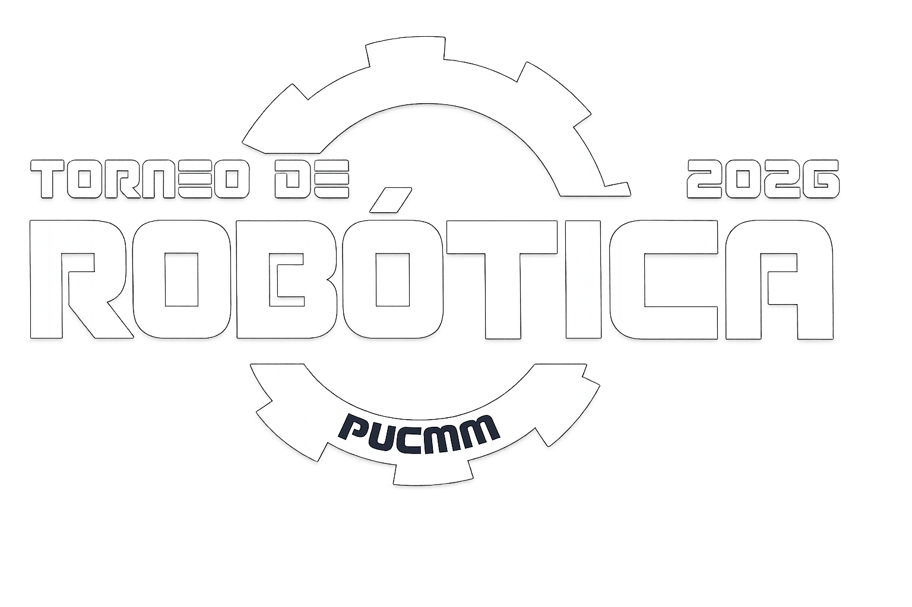

Organizado por el Club de Robótica y la Escuela de Ingeniería en Computación y Telecomunicaciones de PUCMM. Estudiantes compiten programando robots móviles TI-RSLK MAX + robots propios para superar pruebas autónomas.

Los equipos programarán sus robots para superar retos de navegación autónoma divididos en tres áreas clave.
Seguimiento preciso de líneas oscuras mediante matrices de sensores infrarrojos. El robot debe ajustar su velocidad dinámicamente y detenerse de forma segura ante obstáculos físicos sorpresa y paradas de emergencia en pista.
Implementación de algoritmos lógicos en C para mapear y resolver laberintos de paredes y pasillos. Utiliza sensores ópticos y parachoques (bumper switches) para detectar colisiones y escapar en el menor tiempo.
¡Un reto secreto que se revelará solo el día del torneo! Consiste en acoplar y controlar un brazo robótico sencillo para interactuar con objetos. No requiere preparación previa ni pruebas clasificatorias. Es 100% un bonus para acumular puntos extra.
Las fechas clave que definirán el camino del torneo. Prepárate para el entrenamiento técnico y la competencia final.
Sesión presencial de 9:00 AM a 1:00 PM en el Edificio de Ingeniería, PUCMM Santiago. Los equipos recibirán el robot TI-RSLK MAX y aprenderán control básico de motores, calibración de sensores de reflectancia y técnicas de giro controlado.
Entrenamiento remoto de 9:00 AM a 1:00 PM para afinar algoritmos y resolver consultas técnicas. Se trabajará en el encapsulamiento de funciones avanzadas, control a tiempo real con interrupciones del sistema (SysTick/TimerA) y optimización lógica para la etapa de laberinto.
Jornada competitiva completa (9:00 AM – 5:00 PM) en PUCMM Santiago. Los equipos se enfrentarán en varias pruebas de complejidad ascendente, acumulando puntos para clasificar al podio final.
Visualiza y descarga el reglamento oficial del torneo directamente en la web.
Encuentra respuestas rápidas sobre las reglas, requisitos, capacitaciones e inscripciones para el torneo de robótica.
Si tienes dudas adicionales sobre el reglamento, el cupo de equipos, o si eres representante de una universidad invitada, escríbenos directamente.
(809) 580-1962 Ext. 4235
Autopista Duarte Km 1 1/2, Santiago de los Caballeros, Rep. Dom.
Secretaria - Escuela de Ingeniería en Computación y Telecomunicaciones
Tel.: 1(809)580-1962, ext. 4542